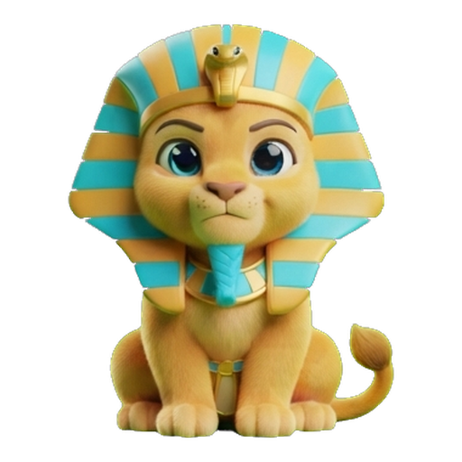
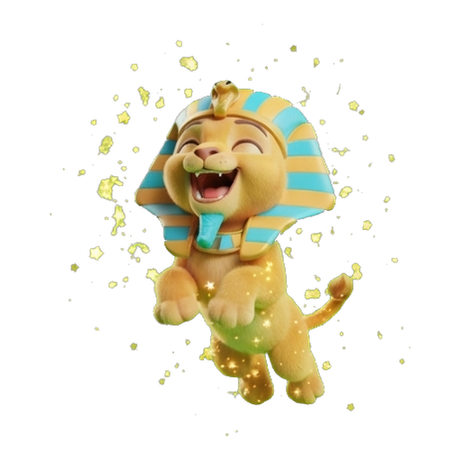
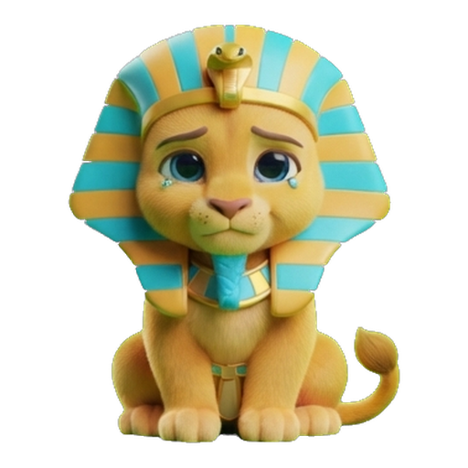
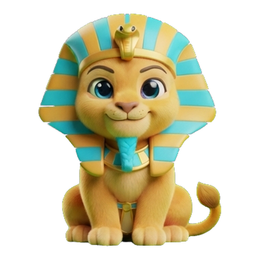

Órdago
Más o menos
Afinar
Contrarreloj
Tienda
1 · Elegir ficha
←
Órdago
Pregunta 7
TODOS ▾

Tu fondo
2.340
Máximo 3.100 · 1 quiebra
Elige tu ficha antes de ver la pregunta
10 %
25 %
50 %
Órdago
Ficha
585
Si aciertas (nivel 3)
×1,5 → +877
Racha ≥ 3 suma ×1,5 · una de cada 7 es
DORADA ×3
Si fallas pierdes 585 y la racha vuelve a 0.
Ver la pregunta
2 · Respuesta con resultado (pregunta dorada)
←
Órdago
Ficha 585
Historia · Roma ▾

Fondo
3.217
🔥 racha 4 ·
DORADA ×3
¿En qué año cayó el Imperio romano de Occidente?
410
476 ✓
553
1453
+2.631
Ficha 585 × nivel 1,5 × dorada 3 × racha 1,5
50/50
×2
Salvavidas
×1
Siguiente
3 · Quiebra
←
Órdago
Quiebra
TODOS ▾

Te has quedado sin fondo
Máximo alcanzado
3.100
Quiebras: 2
Abrir un fondo nuevo con 1.000
🎒 Vender objetos → Tienda (3)
1 · Comparar, jugando
←
Más o menos
Récord 14
Geografía ▾
Comparar
Afinar
Racha
🔥 6
🗻
Monte Everest
altitud sobre el nivel del mar
8.849 m
🌋
Teide
? m
▲ Más
▼ Menos
Salvavidas
×1
2 · Comparar, acierto con revelación y nota curiosa
←
Más o menos
Récord 14
Historia ▾
Comparar
Afinar

Racha
🔥 7
🏛️
Fundación de Roma
año
753 a. C.
🗼
Torre Eiffel
1889
¡Después, acertaste!
Curiosidad: iba a desmontarse a los 20 años.
Antes
Después
3 · Comparar, fallo (diferencia)
←
Más o menos
Récord 14
TODOS ▾
Comparar
Afinar
Racha
0
🐋
Ballena azul
peso
150 t
🐘
Elefante africano
6 t
Era «Más»
Diferencia: 144 t · la ballena pesa 25 veces más
Seguir jugando
1 · Deslizando (imagen viva a escala)
←
Afinar
Récord 5
Geografía ▾
Comparar
Afinar
Racha
🔥 3
Referencia · Torre Eiffel ·
330 m
🗼
330 m
🗽
¿ ?
¿Cuánto mide la Estatua de la Libertad?
≈ 120 m
1/20 ×
referencia
20 ×
Listo
2 · Revelación a escala (¡Clavado!)
←
Afinar
Récord 5
Geografía ▾
Comparar
Afinar
Racha
🔥 4
Tamaño real, a escala
🗼
Eiffel 330 m
🗽
93 m
¡Clavado!
Tu estimación 96 m · real 93 m · error 3 %
1/20 ×
marca verde = valor real
20 ×
Siguiente
3 · Fechas: línea temporal
←
Afinar
Récord 5
Historia ▾
Comparar
Afinar
Racha
🔥 3
Referencia clavada en su año
🏛️
Fundación de Roma · 753 a. C.
753 a. C.
¿ ?
Arrastra: Caída de Constantinopla
≈ año 1380
zoom: siglos → décadas
Listo
1 · Jugando (con tiempo)
←
Contrarreloj
Pregunta 7 / 10 · mejor 8/10
TODOS ▾
Te quedan
3,1 s
Esta pregunta: 8 s (baja a 6 s)
El Amazonas es el río más largo del mundo.
Verdadero
Falso
+5 s
×1
50/50
×2
Salvavidas
×1
2 · Has caído
←
Contrarreloj
Caíste en la 7 / 10
TODOS ▾
Has caído
La pregunta que te tumbó
El Amazonas es el río más largo del mundo.
Falso
El Nilo mide unos 6.650 km y el Amazonas unos 6.400 km, según la medición más aceptada.
Volver a empezar
← Inicio
3 · Llegaste a la 10: cofre y doble o nada
←
Contrarreloj
10 / 10
TODOS ▾
¡Serie completada!
Nuevo récord: 10/10 · dobles ganados: 2
🎁
Tu cofre contiene 1 objeto
Doble o nada
10 preguntas más, de 6 s a 4 s. Si las superas: 2 objetos (con más suerte de rareza alta). Si caes, pierdes el objeto.
Doble o nada ▶
Plantarme y abrir el cofre
1 · Tienda (comprar)
←
Tienda
Fondo de Órdago
2.340
Comprar
Mochila (3)
🎯
50/50
Quita 2 opciones erróneas
300
🛟
Salvavidas
Perdona un fallo
500
⏱️
+5 s
Solo en Contrarreloj
200
Más adelante: accesorios y avatares
2 · Mochila (vender al 50 %)
←
Tienda
Fondo de Órdago
2.340
Comprar
Mochila (3)
🎯
50/50
raro
×2 · vender cada uno por 150
Vender
🛟
Salvavidas
épico
×1 · vender por 250
Vender
⏱️
+5 s
común
×0 · no tienes
—
Vender suma puntos al fondo de Órdago
3 · Cofre abierto (épico)
←
Cofre
Contrarreloj · doble ganado
Mochila
🛟
ÉPICO
Salvavidas
Perdona un fallo en cualquier modo
Segundo objeto del doble
⏱️ +5 s
común
Guardar en la mochila
Ir a la Tienda